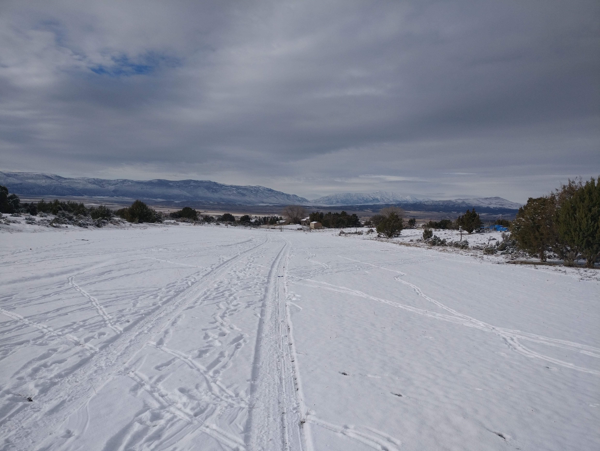
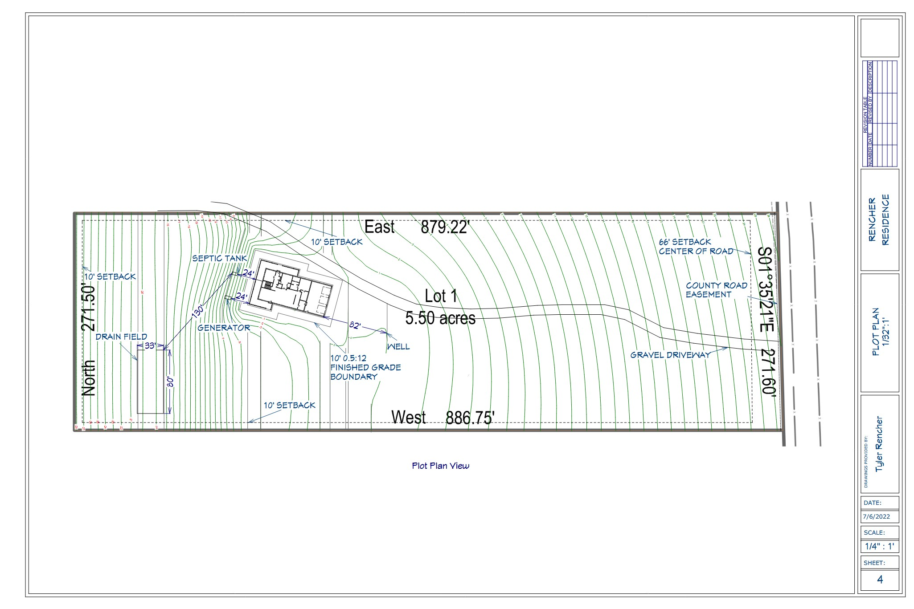
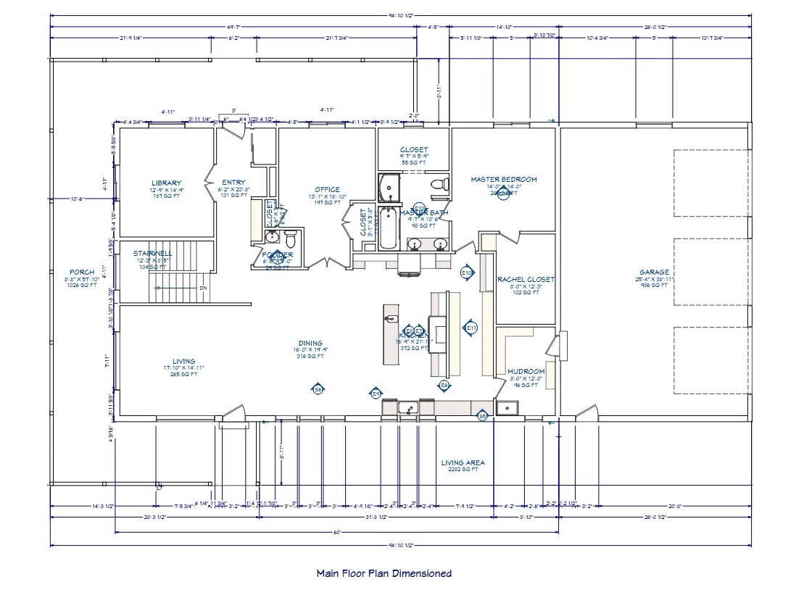
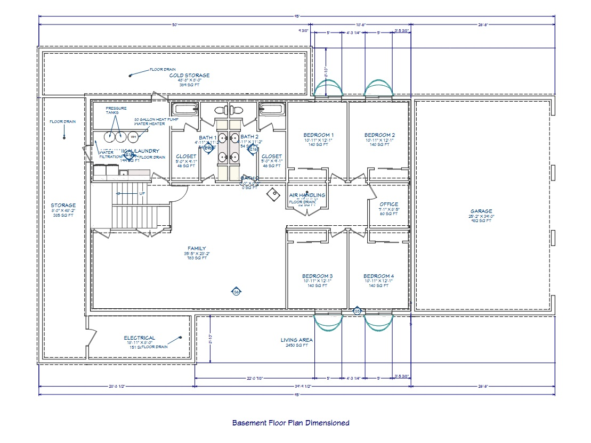
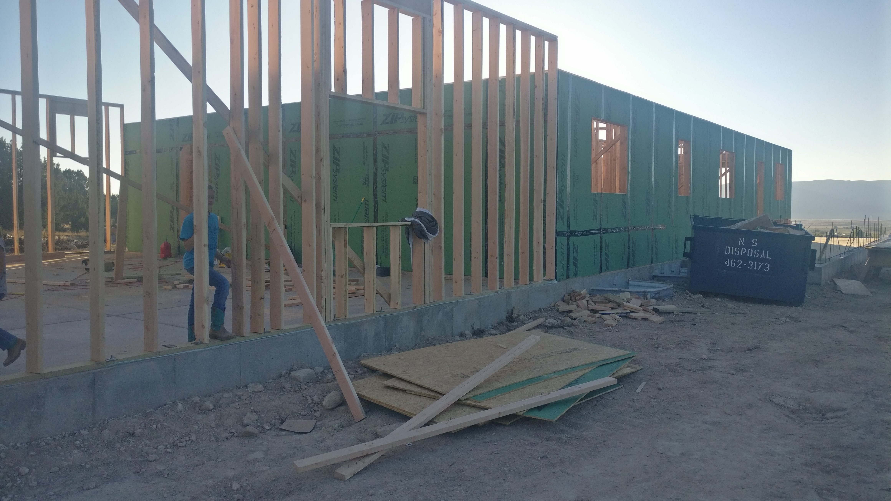
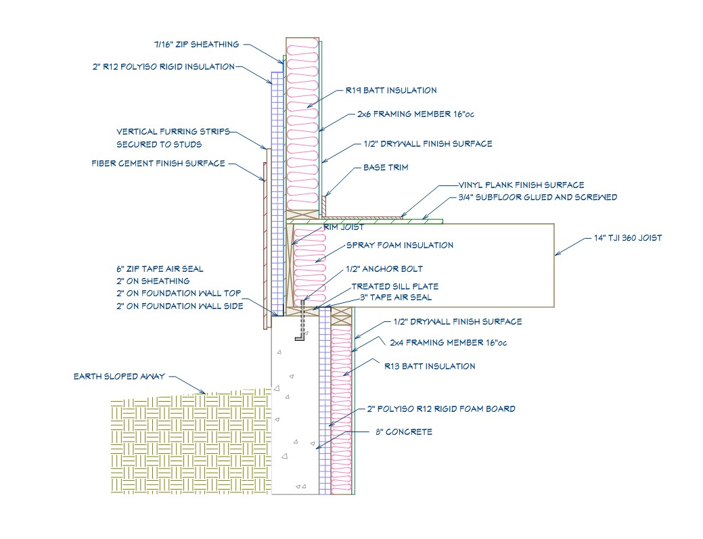
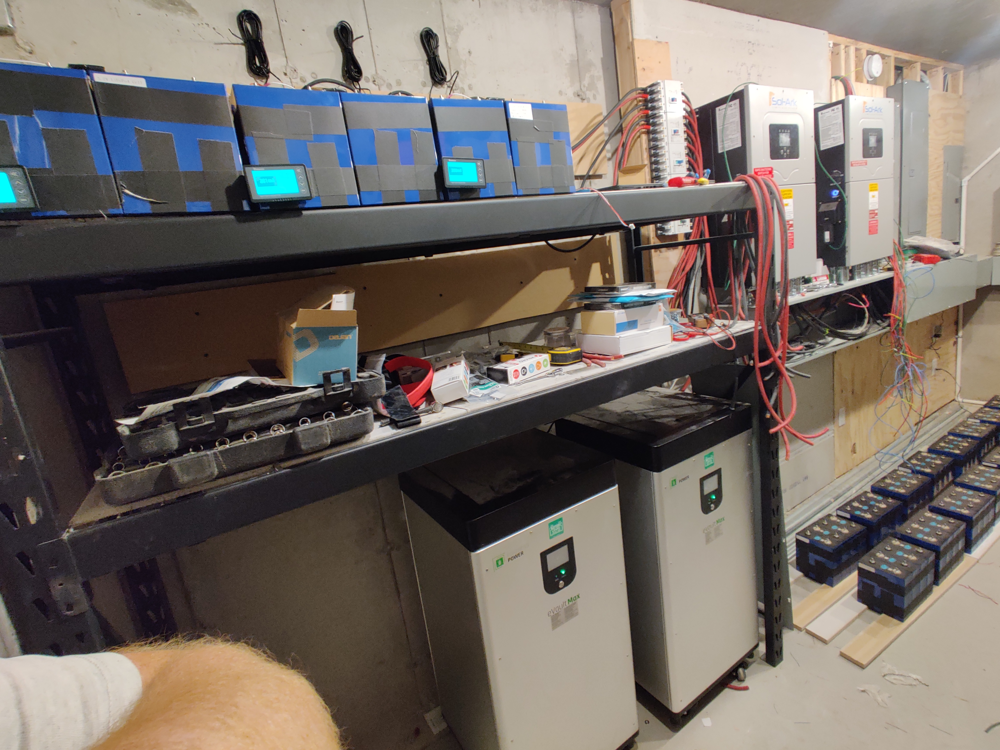
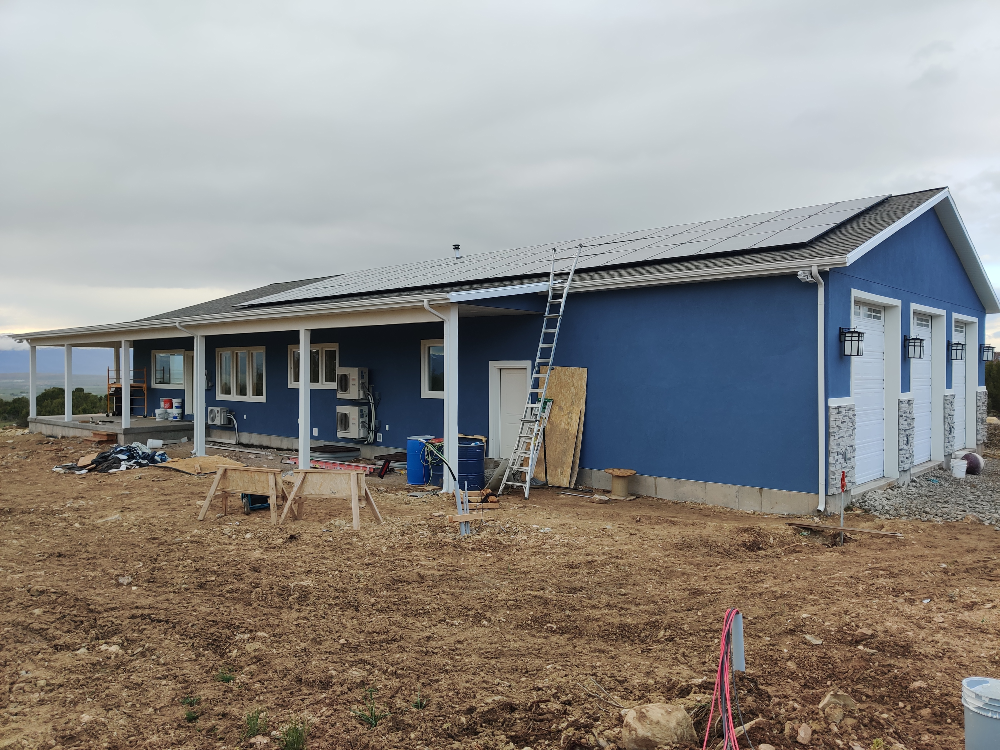
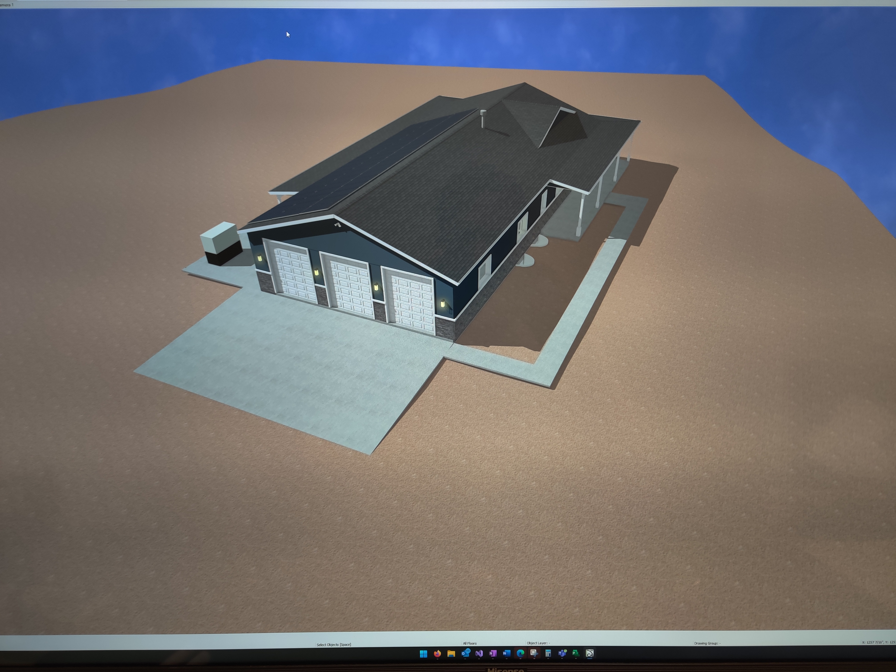

40 acres with no power, no water, and no sewer.
We found a large property a couple of miles outside of Spring City that worked with our budget and had great potential for off-grid living, enough water for small scale agriculture, privacy, and lots of room to raise our growing family. And the views. The views are incredible, but I don't have the skill to capture them with a camera. We loved the juniper trees, the smell of the sage brush, and the open fields on the property. The only reason we could afford it was the fact that it was so far from utilities most people wouldn't want to pay to run power about a mile and then deal with your own water, septic, and gas.
Everything was going smoothly with the design phase and with starting to put infrastructure into the property. No issues were identified by the zoning department, the plans were ready to submit to the bulding department, but at our meeting with the county commissioners to create the actual buildable lot they found that we did not have legal access to our land. The county maps shows that the county had an easement for the road that ran along the property, but it was only a prescriptive easement due to them having maintained that roadway for years. It applied only to the road surface itself, not to any land on the sides. Our land came up a couple feet short of the road surface so we had to acquire half of the road surface from our neighbor. If I had known about that problem in advance I probably would have passed on the land or lowered our offer considerably. That is no small problem. I was fortunate that my neighbor was a great guy and didn't try to take advantage of my desperate situation, but that doesn't happen every time.


Energy independence without asking the family to give anything up.
My wife and I toured a number of off-grid homes when we were deciding whether to build one. Every single home was making serious compromises to quality of life or was heavily reliant on propane. That wasn't what I wanted. I didn't want to have to tend a fire and generator all winter long. I wanted great lightning and a modern lifestyle in a large, comfortable house. I don't want "Little House on the Prarie" as my main residence. I want 2 dishwashers, 3 ovens, 2 refrigerators, 3 freezers, a washer and dryer, my air compressors, and all the hot water I can possibly enjoy.
That was the design challenge. How do you build a large modern home off-grid and control the costs of the project? There were plenty examples of modern net zero homes and small off-grid homes at that time, but nothing like what I wanted. I had one shot to do it and it had to be right the first time. My whole family was depending on me.
Every site has a best answer. Finding it is the first design decision.
We walked the property every day for about six months experiencing it through summer, fall, winter, day, and night. I noticed after a lttle while that the property had a microclimate and that it was more likely to be cloudy in the morning than the afternoon and evening. There was one spot that was consistently warmer and less windy than anywhere else. Every night there was a cool breeze from the East but the harsh South wind was less. It was also adjacent to the most fertile soil on the property for a garden. It had the great views of the 2 most prominent mountain peaks and no shading problems for solar. The house could be oriented 15 degrees West of South to interact with the land well, and to maintain high solar collection.
There were a few problems though. The land was a bit sloped, it was in the center of the property which made for a long driveway, and there was no view of the valley floor. With some thought, I found that we could take advantage of the slope to allow for a gravity fed septic system and excellent drainage for rain and snow melt. I found that if I designed a longer home, anchored the house to the elevation on the East, and had our excavator move the dirt spoil from the basement to the West it would build a berm large enough to provide a future lawn, a gradual slope down to the rest of the land, and would raise the house just enough to get the valley view! It would also provide more uninturrupted roof area for solar panels. As for the long driveway, that provides privacy. You can see the house from the road from only one spot.

This is the plot plan page from the plan set I drew for the house. You can see the contour lines showing the rapid change in land elevation in this location and how I took advantage of it.
Designing for how we actually live — not how another family does.
My family is always home. I work from home, my wife homeschools all of our children here, and we run our small farm from here. Some weeks the only time we leave the property is to go to Church on Sunday. We like to be together, but we also need room to be separate. We have lots of books, stored homeschool curriculum, bedding, food, clothes, and other things that all need a home. Everybody has twice a day chores with the animals so there's the coats and boots to handle. My wife cooks almost all our food and teaches cooking so she needs a large and open kitchen with a big pantry. We decided early on that the children would be sharing bedrooms. When they leave our home they will have roomates or a spouse, so its best they learn to get along with other people when they are young. That would mean 5 bedrooms. We would love a guest bedroom, but people rarely visit overnight so one of the childrens' bedrooms will have to flex to fill that need sometimes. My wife needed a space for sewing, school preparation, and crafts. Lots of requirements!
The most important requirement to meet is my wife's need to watch the youngest children while she goes about her work. She spends most of her time in the kitchen, the main table for homeschool, master bedroom, and her office. The youngest children play in the family room. She parents with her ears so these spaces have to be close together and fairly open to each other. Regular chores meant that the mudroom and garage should be connected. The number of mud boots is just too many and the mess is too much to store them anywhere but the garage. I only want access to the house from the first floor, so the mudroom has to go on the main level. That pretty much defines the entire first floor.
The house would need extensive mechanical spaces. Water treatment and pressurization, HVAC, water heating, air circulation, central vac, and power storage and generation. Power storage was a genuine safety concern. The lithium batteries I was planning to use were pretty safe, but new chemistries in the future might not be. That much energy in a small space though is concerning no matter what and I absolutely did not want children in that area. So that meant a locked door on a fire resistant room. We also have extensive storage needs. With the amount of food we go through and the clothes we have in all sizes, we basically have a small Walmart of storage. The area under the porch is perfect for those needs. It is fairly cool year round, kids don't want to go in there, and a section can be locked off for power.
I didn't want a second story that would be visible above the trees to preserve the view of the surrounding properties. The big playroom we wanted for when the weather was bad, the children's bedrooms, the laundry, my office, and secondary bathrooms all had to go downstairs. Putting anything more upstairs would blowup the square footage of the entire house footprint and leave me with an empty basement. That created a new problem, the master bedroom was the only bedroom on the main level. With young children, sick children, and babies we don't want to be going up and down the stairs all night long. Our solution was a nursery inside the master suite that could be a closet in the future, or converted to a laundry room for single floor living.
Architecturally speaking the house is very plain. There are 4 reasons for this. One, we live in the middle of the woods, two, I needed the south facing roof to be long and flat with zero obstructions, three, we wanted a big wrap around porch with storage below, and four, simple houses are cheaper to build. We chose a simple gable for the front of the house to break up the roof, choose a bright color to make the porch pillars pop, and rock for the path to the front door, but that was it. These requirements forced the design into a rectangle which simplifies some things by constraining choice, but makes other things harder like getting natural light into some parts of the house.

This is the main level page from the plan set I drew for the house. It focuses on the room layout and the general dimensions as an overview.

This is the basement level page from the plan set I drew for the house. It focuses on the room layout and the general dimensions as an overview.

View of the kitchen to the South featuring dual ranges nearing the end of construction.

View of the kitchen to the North nearing the end of construction.

Basement family room where the children often play after school on days when it isn't nice outside.
The part of the house no one sees, and the part that determines whether you're comfortable.
The building envelope means the perimeter of the conditioned area. In my home that goes from the foundation footer to the top of the main level wall and bridges to the drywall ceiling, then down the other side of the building to the footer and across the basement slab to the starting footer. Every intersection needs to be detailed correctly to prevent air leakage. Some don't really matter in practice like the footer to slab and stem wall intersections. The concrete seals well enough using standard construction methods. But the sheathing must be sealed to the concrete, the sheathing itself must be coated to prevent air leakage, the bridge from the sheathing across the top plate to the drywall must be sealed. That is partiularly challenging because multiple contractors are involved in that joint. All penetrations in the drywall ceiling will leak air into the attic. Windows will also leak air if not sealed properly to the framing. There are many problems in this space and many solutions. Some of them are expensive and throw off the standard construction schedule, but can be the right call. Most cause changes to the normal build schedule that general contractors are used to following. Changes to processes are dangerous to the end product.
In my home I deviated from the original design details as the build went on and some assumptions were incorrect or we just changed our plans. For instance, we switched from fiber cement lap siding to stucco for the exterior and the cost of rigid foam got outrageously expensive so it was scrapped in the basement. I also discovered that the air sealing tape I was using did not stick reliably to concrete and had to switch to a specialized sealant. The final air sealing system I used was to use highly flexible sealant to seal the ZIP system sheathing to the concrete. Then ZIP sheathing for the exterior with all seams taped with ZIP System tape. All window and door openings were flashed with ZIP System tape to form an air seal and water seal. The ZIP system sheathing was sealed to the top plate using sealant and a drywall gasket was applied to the interior of the top plate to form a seal when the drywall was installed. The ceiling has almost 100 penetrations for electrical on the main level. Sealing those was a special project that I will have to post a journal entry about, but I sealed containers to the top of the drywall to create an air barrier for each electrical penetration.
My official goal for the house was that it would test below 2.0 ACH50. I wanted it to get to 1.0 ACH50, and I secretly wanted 0.80 ACH50. You can think of ACH50 as the number of times that the air is fully exchanged in the house due to leakage under the pressure of a 20 mph constant wind. The air leakage test report came back with 1.03 ACH50. I hit my offical goal but did not hit my actual goal. We searched for where the extra air was going and found a few small defects with a FLIR camera, but nothing that significantly tightened up the building. A couple of days later I discovered that the plumbing had been installed but some of the P traps had not been filled with water to seal them. We did not test again after that repair, but if we had tested with that fixed it probably would have tested closer to 0.85-0.87 ACH50. Not bad for a first time build which includes a fuel burning heater and chimney.
This result matters for 2 reasons. First the HVAC system needs to be sized for heat loss and gain. When air leaves the house or is introduced into the house there will be heat loss and gain. Limiting the air transfer allows you to downsize the HVAC system which saved money and more importantly, power for an off-grid system. Second when air leaves the house it causes a chimney like effect. Air escapes at the ceiling and draws air in from the bottom. This is particularly pronounced in winter when the air being drawn in is cold and the air escaping is warm. This causes a natural draft everywhere in the house leading to cold floors, warm ceilngs, and a furnace that is running regularly making noise and blowing really warm air out making more air currents in the house. When it comes to occupant comfort preventing unwanted air movement is the most important factor. Insulation is important too to prevent cold spots near the walls and reduce the load on the heating equipment, but it doesn't play into comfort very much. This is why my floors are warm all winter long without a radiant heating system, with standard HVAC equipment, and without excessive insulation.
The insulation consists of a continuous layer of 2" XPS rigid foam on the entire exterior of the main house for R10 insulation value. Then the wall cavities are filled with blown in dense packed fiberglass for about R22. Doing the math you would say that the walls have and R value of 32, but the real total wall R value is closer to 25. That is not a very impressive number by high performance building standards, but it works very well in my climate paired with air sealing. The ceiling is insulated to R60. This also doesn't include window insulation values or heat gain. I used normal double pane windows, not the standard triple panes. I couldn't get affordable triple panes so I found double pane windows with extremely good air seal performance and ordered them with a coating to allow the sun to heat them and transimit that heat through into the house. Those windows may have an equivalent R value of 7, but they are actually heaters when there is any sun out. The heat doesn't run at all if the outside temperature is above 20F and it is a sunny day. In the summer the sun angle is so high that the porch keeps the windows shaded all day and they don't add heat to the house.
You can see how this is all an integrated system that needs each part carefully chosen to meet the overall build requirements. For my home I wanted to run on all electric all the time and that meant finding ways to reduce electrical usage in winter when we generate the least power. That meant making the HVAC system as small as possible, leaking as little air as possible, and allowing as little heat to be lost throgh wall transfer as possible. But at some point running the generator is cheaper than adding more insulation or even better air barriers, so it is a balance that has to be determined on a case by case basis. I think I struck that balance well. I compared our electrical usage with a friend who also has an all electric house. 4 people live there and the home is 1200 sqft. They use more power than we do in the winter despite having 9 people in my home and my home being 5000 sqft. I estimate that if I built my home to normal standards we would be using around 6000 kWh per month. That would be a power bill of $722 per month. If my home were grid connected we would pay $289 per month. That might seem high, but remember that includes all utilties. If I were grid connected, high performance design would save me $433 per month in the winter on utilities and around $300 per month in the summer. Annually it works out to about $4,400 saved each year just due to the design details. It was a bit more expensive, but that cost would be made up in about 3 years for my home. High performance design makes it possible to live like we do off-grid. It would cost a hundred thousand dollars more in the electrical system and we would have to run the generator all the time in the winter if we used standard design and build practices.

The body of the house is treated as a separate unit from the garage. Independently air sealed and insulated on all sides.

Detail from plan set showing construction detail for exterior walls.

The entire exterior of the house is wrapped in 2" of continuous rigid foam insulation.
A standard forced-air system. Extraordinary comfort. The envelope is why.
In our past homes we have always kept our thermostat set to 68 in the winter and 78 in the summer to save money on heating and cooling. We have had to wear sweaters all Winter and bundle our babies up because they would get so cold on the floor. In the Summer we just sweat. Now we keep the house at 70 in the winter and 74 in the summer (power is "free" in the summer!) We tried turning the AC down more in the summer, but it just gets way too cold below 74. In the winter we dress normally. Some people wear long sleeves, some wear short sleaves, and the babies are dressed normally to play on the warm floors. The leather couch isn't a sticky mess in the summer or a cold rock in the winter. It is very, very comfortable. I never want to live in a normal house again. I would absolutely pay for this level of comfort even if it didn't save me money in utilities. It is worth it.
My home contains many smaller rooms off of other rooms within a large footprint. I wanted to use standard minisplits to condition the house, but the problem that I ran into was that they were going to be too large and short cycle all the time. So they would never run efficiently. Right sizing them to 1 unit per level would mean that there would take a long time for air temperature to catch up in many rooms. I went with ducted mini splits. That means that the system works exactly like a standard system with a blower unit inside the house and an outdoor heatpump unit that handles the heat exchange. The ducting is all run inside the joists supporting the main level. Having the duct work contained completely inside the building envelope means that I have no energy losses from the duct work being in the attic.
Having a home built this tight meant that I needed to pull air in and move it out in a controlled way to keep their air fresh. I do that with an ERV (Energy Recovery Ventilator) unit. It uses a special heat transfer mechanism that allows the incoming and outgoing air streams to pass through each other without mixing and it transfers the energy (either heat or cold) from the conditioned air to the unconditioned air. This means that I'm not exhausting all my warm air in the winter while keeping the air fresh in the house.
The house uses 2 units, one for the main level and 1 for the basement. The basement unit is a 1 ton unit and the main level unit is a 1.5 ton unit. Around here a hosue this size would normally have 7-10 tons of capacity installed where as I have only 2.5 tons. The basement unit is oversized because I could't get anything smaller and the upstairs unit had to go up one size to make sure that it could provide enough A/C capacity. The result is that the main level unit runs for long periods right in it's highest efficienty zone and the basement unit runs long enough to be highly efficient, but it overpowers the heat loss in the winter so it turns off after a couple of hours. The basement AC only runs if it is over 100F outside or there's a ton of kids playing in the basement during the summer. My favorite part of the system is that everyone told me that it wouldn't work, but it is fantastic. I had to sign a waiver before the HVAC company would do the install so that I couldn't hold them liable for the rework costs if it wasn't enough capacity.
Why was I so confident that I was right? We wouldn't know if I was right until the house was completed and we had been living in the house for at least 1 full year. That's a big risk to take. The answer is that I did the math. I had the local historical climate historical data so I could determine the worst case scenarios. I knew how tight the house was supposed to be, how it was insulated, and how many windows and doors we were going to have. That let me calculate how much heat the house was going to gain and lose under various conditions. Not only that, but I could so that math room by room and make sure the final design wasn't going to over heat or over cool any room. With those numbers I was able to look at the different heat pump manufactuers and select units that could meet my performance requirements.
Having lived in the home for years now I'm much more confident in trusting the building envelope. I still think a ducted minisplit was the right call for my home, but I would trust a single head minisplit to be able to condition an entire home effectively with the right floor plan and eliminate the duct work as a huge cost savings.
Solar, battery storage, generator backup, and a complete water system — designed as a unified whole.
Sizing the solar and battery storage requires balancing multiple factors. There's peak demand, sustained demand, and seasonal variation in production and consumption. What you find pretty quickly is that Thanksgiving and Christmas are your worst case scenarios. High peak and sustained demand during low production seasons. Running a generator is expected for times like that. It is far cheaper to use the generator to recharge the batteries sometimes than to increase the size of the solar array to handle the worst case scenarios. I used software to calculate the heat loss of the house under various weather conditions and simulated multiple winters to get an idea of the average heating demand. I used efficiency tables for the heat pumps to calculate how much power they would draw to make up for the heat loss. Our prior homes had used gas for heating so I could estimate our general electrical usage based off of those bills and add that into the calculation. I used that data to check my appliance-by-appliance estimation and they agreed pretty well.
I combined all of that data into software that I wrote to run various winter scenarios and see how much generator runtime would be needed for various sizes of solar arrays and battery capacities. I found that there was a point where increasing the size of the battery bank didn't really help anymore. Increasing the size of the PV array always helps, but the returns diminish after a certain point making it much more cost effective to use the generator. I also analyzed generator runtime strategies and found a balance for the whole system. My worst case analysis showed that I needed to be prepared to run my generator for 200 hours per winter, but in the best case it might only be 20. My analysis showed that the most energy consuming load in the winter is the HVAC system. Even thought it is small and efficient, it needs a lot of power. After that come the water heater and well pump.
On the whole my analysis was very good. The biggest thing that I was wrong about was the well pump. We have only a single pressure tank for storage so when the pressure there drops below 55 PSI the controller turns the pump on to maintain pressure in the house. The experience is just like being on city water with constant pressure. The downside is that the pump runs way longer than I was expecting. It draws the most power of any system in the house over time. This past winter the well pump drew 2.45MWh, the main level HVAC drew 1.17MWh, the basement HVAC drew 1.07MWh, and the water heater drew 0.86MWh. The total for those large loads was 5.55MWh which was 45% of the total power we consumed. I also learned that the idea of sizing a system based on battery autonomy days makes no sense. If you have a large solar array, you are always going to make some power. Plus the HVAC load is highly variable and the highest demand is usually correlated with sunny weather. The worst 2 consecutive production days we have every seen produced 16 kWh. Normally what we see is a single bad day followed by a string of ok days. It is a long string of ok days that causes the batteries to get depleted, not a single bad day.
I really don't like running off the generator. I'd rather conserve power to avoid that. It's mostly because I chose a diesel generator. They require a significant amount of preheating to function, they don't like being run regularly without a heavy load on them, and it has a $/hour component to it. I feel like I have to justify running it which is silly because it is a designed part of the system that fills an important role. I do not recommend diesel generators to clients because they can't be integrated with full automation into the inverters on the market today. I have to manage the generator manually. I go turn on the coolant preheater 1-2 hours before turning on the generator. Turn on the generator. Tell the inverters to start battery charging after it is warmed up. Tell the inverters to transfer back to battery after a few hours. Let the generator cool down under low load. Then turn off the generator. I recommend propane converted natural gas generators to clients because they can be configured to be completely automated with modern inverters. I would probably go with diesel for myself again though.
If I were doing the water system again I would drill a deeper well or would install storage. We don't have enough water to be completely confortable. If we had storage we would also have used a normal well pump which would draw less power than the VFD controlled pump. Our treatment system is unique to our well, everyone's will be differnt. I wasn't very happy with it at first and wished that we had paid for whole home reverse osmosis, but I'm happy with it now. The ongoing costs are not high and we have had our tap reverse osmosis system get fouled multiple times which tells me that we would have had to do peroxide injection no matter what.
Electrical System
56 Solar panels on roof totaling 20 kW
16 Solar panels on ground mount totaling 6 kW
2 SolArk 15K inverters
2 Fortress eVault MAX LiFePo4 batteries totaling 37 kWh storage
7 Home built LiFePo4 batteries totaling 100 kWh storage
1 Diesel generator configured at 20 kWh prime output
Water System
400' deep well
Varible Frequency Drive pump controller to maintain constant pressure
Peroxide injection 4 stage filtration

Battery rack, inverters, and combination panels in electrical room.

The roof was sized to accomodate 3 rows of solar panels across almost the entire surface.
The county not experienced off-grid electrical systems.
Being a fully permitted build was a bit different. The county building inspectors know that there are many solar and battery installations in the county that have not been inspected. At first they were not going to approve any off-grid plans. Eventually I convinced them by getting a solar contractor involved. The law allows for a homeowner to work on their own home as long as the work is inspected, but I was on a timeline and going to court would have been expensive and taken forever. This was the single worst thing about the build. The contractor I hired was in my opinion completely incompetent and just a salesman. I ended up driving everything and caught a catastrophic problem that would have ruined $15,000 in equipment if they had energized the system without fixing it. In the end I had to rewire the entire system to get it to work properly.
Once that hurdle was overcome everything went pretty normally. I had to prove that the house didn't need the standard house wrap due to the ZIP System. I also had to prove that it was acceptable to use foam on the outside of the structure. I did this using building code and manufacturer provided techincal documents. The key is to be ready to discuss details that are out of the ordinary competently and with confidence. Have your evidence ready and understand that the building offiials are usually just trying to do their job. Just like anyone else, they get used to doing things a certain way. They aren't opposed to learning something new, but may not love that learning coming from a designer or homeowner. It is important to give them evidence from sources they would consider reliable and give them time to consider the evidence.
Managing a complex build from the design side.
I couldn't find a general contractor that could build me the home I wanted so I used a general that I felt I could trust. I wrote some tasks out of our contract that I would control completely, like the water and solar. I tried to make everything as standard as possible from his perspective. We walked through the unique design details and talked about how to fit them into the standard construction schedule. That conversation ended up with some changes to the wall assembly details to help the process move along smoothly, but hit the performance numbers I wanted. It actually ended up saving some money.
My general contractor was a framer for years so once I showed him the differences between normal framing and what I needed he got it right away and I was able to trust him to do it right. I still was on site for the first wall to answer questions and observe. We had a hard time finding an HVAC contractor that would work on the build. That was another disappointing part. The contractor didn't follow the duct design I had made because it was too different than what he was used to. I designed it to be quiet and to limit air flow to rooms that didn't need it. So the ducting sizes were outside of ordinary. At this point in the build I was getting tired and the solar was becoming even more of a nightmare. Some important deadlines were approaching and I didn't have the confidence in my duct design calculations that I do now. I didn't require that my design be followed and now the system isn't as good as it should be. Some ducts are getting too high of air pressure and closing off the diffuser makes them noisy. The ERV intake is undersized so it whistles a bit. Ultimately it shows that even with a bad HVAC install, a great building envelope can still create a very comfortable living experience for the occupants. I should have leaned on my general contractor more to help me get it done right.
The build went pretty smoothly all things considered. We were moved in 9 months from getting the permit issued which is a pretty quick build. I debriefed with my contractor after everything was done and he felt it had gone about as smoothly as a normal build does. It ended up being a good experience for him to build something different. To me it felt like managing projects at work. Some parts I had maximum influence over, but other places I needed to drive change through others. For me as the designer, the best part was seeing the house turn out to look exactly like the 3D models I had produced looked. When the drywall was up and the exterior was finished I took her on a tour of the house and she was shocked that she knew her way around perfectly. Everything looked exactly like she was expecting it to.

Everything starts with the foundation. The black coating is all the water proofing we need in the desert.

The garage is insulated the same way as the rest of the house except the ceiling has less. It has never frozen even in -20F.

Shot of the air sealing between the top plate and drywall. The roughed in mechanical systems are also visible in the master suite.

The 3D models I was able to render during the design phase were invaluable to making decisions early.
Years of living in a home you designed teaches you things no textbook does.
Having been in the home for a few years there are a few things I would change. I had a shop as part of the initial build but had to scrap it due to rising building materials costs. I should have made the garage 4' deeper to make it function better as a work space. It was designed for parking cars and some storage, not work working on cars.
I would have done fiber cement siding like I originally intended. The stucco is fine, but lap siding looks so classic and nice.
I wish the solar array was ground mounted like I wanted it to be. Having it on the roof is fine except for the low roof pitch. I have to go up there and clear the snow off which can be dangerous.
I've learned that most solar estimators and designers don't know how to design a system that does well in the winter. They are almost always focused on time of day and total year generation. They just don't understand very well how to size a battery bank. They are working off of rules of thumb like the other trades. After the land, the power generation system is often going to be the most expensive part of an entire build. It is not straight forward to size each part appropriately and needs to take into consideration the entire structure. Mine is sized pretty well.
These are just some of the lessons that I've learned which I can help you avoid. My goal is always to save at least my fee in prevented mistakes and deliver a design that is very comfortable for your family.
I would install a dryer duct to the exterior even if I was going to seal it off and use a condensing dryer. Our condensing dryer doesn't do a great job and needs frequent maintenance. If I decide to add a dryer duct it is going to be very expensive now, but it would have been about $100 during the build.